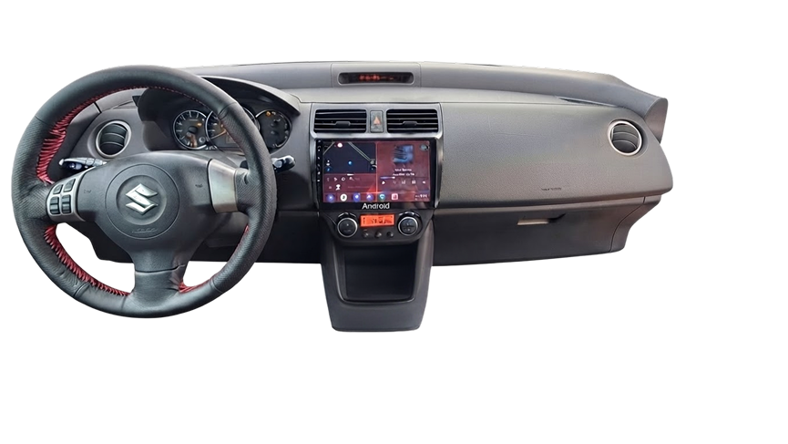
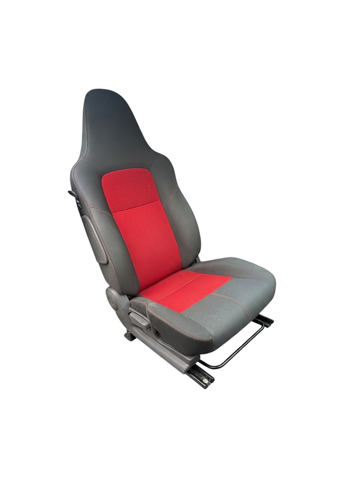
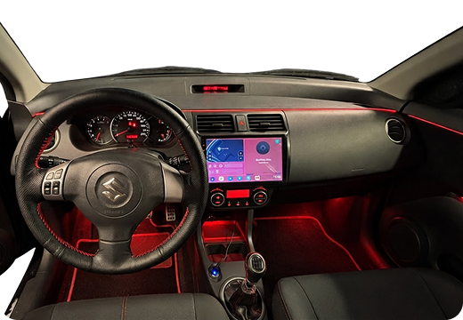

Redefine the way you Drive
A better driving experience starts inside. Explore comfort, control and cabin upgrades for your Suzuki Swift Sport.
 Swift Sport
Car Tuning
Swift Sport
Car Tuning
A better driving experience starts inside. Explore comfort, control and cabin upgrades for your Suzuki Swift Sport.

01 / THE FOUNDATION
The Swift Sport is designed to make driving engaging, but the cabin can also reflect your personal preferences. Supportive seating, well-positioned controls and practical technology all contribute to a more confident drive. The best upgrades improve daily usability without compromising safety.

02 / DRIVER POSITION
A supportive seat helps maintain a comfortable driving position. Check mounting points, seat-belt compatibility and any airbag or sensor systems before replacing seats.
03 / HANDLING THE CONTROLS
The steering wheel, pedals and gear selector shape how connected a car feels. Choose parts that fit your model and keep the horn, airbags and other safety functions working correctly.
04 / PERSONALISATION
MATERIALS / FINISH
Upholstery, floor mats and trim details can refresh the cabin without changing its basic layout. Use durable materials, keep pedals clear and secure every accessory.
CONNECTIVITY / DAILY USE
Better speakers, phone integration and a clear display can make daily driving more enjoyable. Route wiring safely, secure devices and avoid screens that distract the driver.
05 / CABIN ATMOSPHERE
Subtle ambient lighting can give the Swift Sport cabin a more modern and personalised appearance. Footwell lights and discreet LED accents can highlight interior details without overwhelming the design. Keep additional lighting discreet and avoid driver distraction.

06 / BUILD RESPONSIBLY
Start with the parts you interact with every day. A clean layout, useful technology and a comfortable seating position can make a real difference. Before changing seats, belts or other safety-related components, check the requirements that apply to your specific Swift Sport and modification.
Continue exploring wheels, styling and exterior upgrades.
NEXT: EXTERIOR